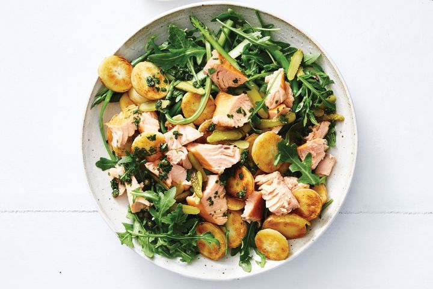

Crispy potato and salmon salad

Description
Dinner done in 30 minutes or less is the ultimate weeknight goal, and this recipe is here to help you do it. This easy, low-cal bowl is made with hot smoked salmon, so it's a breeze to throw together after work.
Ingredients
- 500g baby coliban (chat) potatoes
- 1 bunch asparagus, trimmed
- 60g baby rocket
- 2 x 150g hot smoked salmon fillets, skin removed, flaked
- 2 tbsp sliced small gherkins (cornichons)
- 1 cup fresh continental parsley leaves
- 1/2 cup fresh basil leaves
- 1 tbsp baby capers
- 60ml (1/4 cup) olive oil
- 1 tbsp white wine vinegar